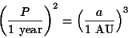

- The ``Astronomer Prince'', a very eccentric character, pompous and arrogant nobleman
- 1557: Studies law in Copenhagen (age 13)
- 1558: Witnesses partial solar eclipse, amazed that astronomical events are predictable, devotes self to astronomy
- Dispute with relative over who was best at math duel, nose sliced off and replaced with silver!
- Important recognition: astronomy needs continuing observations of greater precision and accuracy
- Builds improved instruments, becomes greatest pre-telescopic observational astronomer
- Positional data accurate to (1/30th of a degree)!
- Important astronomical events in Tycho's life
- (a)
- 1558: Partial solar eclipse
- (b)
- 1572: Supernova in Cassiopeia
- No measured parallax well beyond the moon in Aristotle's celestial realm
- Heavenly change, contradicts Aristotelian cosmos
- (c)
- 1577: Comet
- Limits on parallax
at least 6
 farther than Moon
farther than Moon
- No mere ``atmospheric phenomenon''!
- Limits on parallax
at least 6
- King Frederick II gives Tycho the entire island of Hveen!
- Tycho builds grandiose observatory Uraniborg, ``Castle of the Heavens''
- Rules the island in grand dictatorial style
- Tycho's cosmology
- Compromise between geocentric and Copernican ideas
- Earth remains motionless at cosmic center (plausible, since fixed stars did not have measurable parallax)
- Sun goes round earth as in geocentric model
- But other planets go round Sun, as in Copernican model!
- Note: Tycho's model breaks the ``celestial spheres''
- Becomes ``Imperial Mathematicus'' to Rudolph II in Prague (1596)
- 1601: Dies of uremia after dinner with the Rosenbergs, ``let me not seem to have lived in vain''
- Founded ``astrophysics''
- Search for mathematical laws to describe natural phenomena (planetary motion)
- Nightmarish childhood
- Attended Lutheran seminary from age 13-17
- Prof of math and astronomy at Gratz by age 23!
- Kepler deeply influenced by Pythagorean thought
- Beauty of geometry and mathematics
- Harmony of the spheres
- Convinced that cosmos must be geometrically beautiful
- Mystical inspiration for work
- Kepler's ``day job'': astrology!
- 1601: writes treatise that breaks with principles of Ptolemaic astrology
- Tries to make astrology more ``certain'', based on harmonies
- Importance at imperial court of Holy Roman Emp. Rudolph II
- Thought souls interacted with planets, ``the hidden cause''
- Kepler's main obsession: significance of the fact that there were
six known planets
- Today we know that planets formed out of gravitational instability in a disk-shaped nebula 5 billion years ago
- Fact that there are 9 is an ``accident'' of the initial conditions of the nebula (rarity of such a configuration is unknown--so far other solar systems look very different, but we can't detect similar ones to our own for another decade or two)
- For Kepler, six planets must be related to the five regular polyhedra (Platonic solids)
- Solids with regular polygons as faces and all vertices look the same
- Can prove that only five exist:
- (a)
- Tetrahedron: 4 triangular faces, 3 edges at each vertex
- (b)
- Octahedron: 8 triangular faces, 4 edges at each vertex
- (c)
- Icosahedron: 20 triangular faces, 5 edges at each vertex
- (d)
- Cube: 4 square faces, 3 edges at each vertex
- (e)
- Dodecahedron: 12 pentagonal faces, 3 edges at each vertex
- Kepler thought that planets moved on six spheres circumscribed and inscribed around the five solids
- Finally failed to reconcile with observations, though fit to within about 5% error
- Very modern scientific innovation: if theory doesn't fit the observations, must discard it!
- ``Under a calamitous sky'', Kepler marries a rich widow, ``simple of mind and fat of body'' with a ``stupid, sulking, lonely, melancholy complexion''
- Very personal and amusing (though obscure) writings, unusual record of the blind alleys and frustrations in scientific thought
- 1597: Mysterium Cosmographicum (Secret of the Universe)
- Presents Kepler's cosmology involving Platonic solids
- First outspoken defense of Copernicus (50 yrs after death!)
- Search for the physical causes of planetary motion
- Kepler recognizes that he needs good data Tycho
- 1600: Tycho invites Kepler to join him; rocky relationship, constant arguing
- Tycho knows Kepler has theoretical brilliance to interpret his data, but jealously guards his data
- After Tycho's death, Kepler gets Tycho's title and data
- Struggles long and hard trying to understand the motion of Mars
- Heliocentric model of orbit of Mars using circles leads to a stubborn error of , even with use of equant
- ``Because these could not be ignored, they alone have led to a total reformation of astronomy.''
- 1609: Astronomia Nova (New Astronomy)
- Problem of orbit shape; spends years trying all kinds of ovals and epicycles, finally stumbles across answer
- First 2 of Kepler's three laws:
- 1.
- Planetary orbits are ellipses with Sun at one focus
- 2.
- Orbits sweep out equal areas in equal times
- Finally smashes the dogma of uniform circular motion!
- No more epicycles
- First precise, verifiable natural laws
- Work on magnetism at this time by William Gilbert (1544-1603, physician to Elizabeth I)
- Kepler thinks the planets are held in their orbits by ``magnetic'' force from Sun which ``diminishes in ratio to distance as does the force of light''
- Connection of Earthly with celestial
- Tantalizingly close to idea of universal gravity, but doesn't quite get it
- Kepler's cosmos and the Holy Trinity: Father--Sun at center, Son--Sphere of stars at circumference, Holy Ghost--force from Sun in intervening space
- 1619: Harmonice Mundi (Harmony of the Worlds)
- Importance of Pythagorean harmony and geometry
- Compares ratio of min/max distances of each planet from Sun with musical harmonies; music of the heavens!
- After much trial and error, stumbles onto Third law:

- P= period of planet (how long to go around Sun)
- a= semi-major axis of ellipse (for special case of circle, radius)
- If P in years, a in A.U., then constant is 1:

- A.U. = astronomical unit = Earth-Sun distance = km
- 1621: Epitome of Copernican Astronomy
- Generalization of 3 laws to all planets
- First textbook of Copernican astronomy
- Placed on Index of forbidden books
- 1627: Rudolphine Tables
- Use of 3 laws to predict planetary motions
- Kepler still does not understand physical reasons why his laws exist...
- Somnium: last published work
- First real modern science fiction story
- Dream of a journey to the moon
- Dies sickly and poor, unable to collect monies owed to him